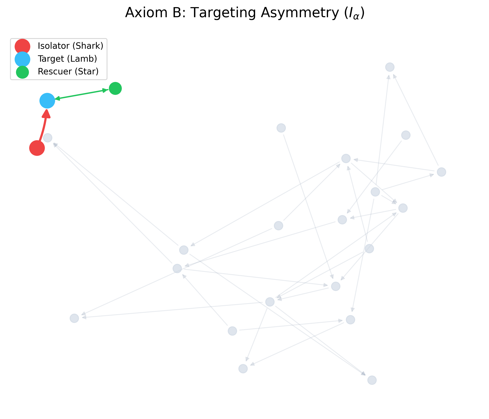
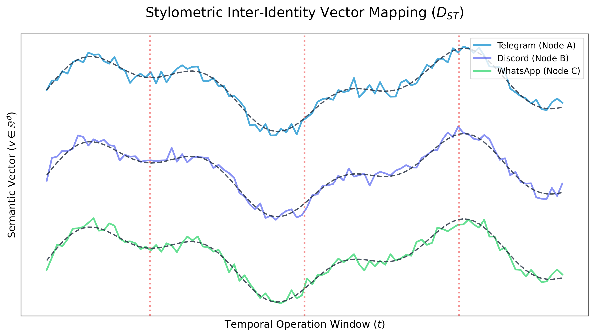

Non-Invasive Behavioral Anomaly Detection & Privacy-Preserving Structural Modeling in Vector Spaces
July 2026
1. Introduction
In high-velocity group communication networks (such as Telegram or Discord), bad actors often exploit the sheer volume of ambient noise to execute targeted scouting, conversational isolation, or malicious grooming. Traditional Natural Language Processing (NLP) solutions rely on sweeping chat logs and processing raw text, which inherently risks violating strict data governance laws, particularly the Singapore Personal Data Protection Act (PDPA).
This paper introduces Project Vanguard, an architectural pipeline that replaces deterministic rule-based NLP decoding with a statistical and topological framework. By modeling communication dynamics as localized vector geometries and categorical structures, the system detects anomalous interaction topologies without reading or storing explicit chat data.
2. Axiomatic Mathematical Framework
To isolate malicious behavioral tracking without processing empirical textual histories, the system establishes three foundational axioms governing human interaction spaces.
2.1 Axiom A: The Ambient Semantic Baseline
In any stabilized communication channel, the general population generates conversation that centers around a moving average vector space, defining the Ambient Semantic Baseline \(\vec{\mu}_t\) within a specific temporal window \(t\).
Let a window contain \(N\) messages, where each message token sequence is mapped via a local embedding function \(\phi(\text{text}) \to \vec{v} \in \mathbb{R}^d\). The baseline is defined as:
The Semantic Divergence (\(D_s\)) of an incoming text block vector \(\vec{v}_k\) relative to the baseline evaluates the deliberate intent to hijack or redirect the ambient social context:
2.2 Axiom B: Morphism Directedness and Network Asymmetry
We frame the communication network as a Category \(\mathbf{C}\) where objects \(\text{Ob}(\mathbf{C})\) are network participants, and morphisms \(\text{Hom}(A, B)\) are directed text-vector communications from node \(A\) to node \(B\).

Figure 1: Intense asymmetrical targeting isolating a single node against an ambient background manifold.
We define the Targeting Asymmetry Index (\(I_\alpha\)) for a specific node \(A\) over a historical horizon as the ratio of outbound structural intensity directed at a single target node \(B\) relative to inbound structural reciprocity:
where \(\epsilon\) is a smoothing parameter minimizing division-by-zero errors.
2.3 Axiom C: Semantic Velocity and Acceleration Gradients
Let the semantic vector of a sequence of interactions from node \(A\) to node \(B\) at sequential timestamps \(t_1, \dots, t_n\) be denoted as \(\vec{v}_{AB}(t)\). The Semantic Velocity (\(\vec{V}_s\)) and Acceleration (\(\vec{A}_s\)) are:
A severe negative drop in vector similarity across an exceptionally tight temporal delta signals a hostile context jump.
2.4 NLP Categorical Weighting (\(W\))
To prevent false positives from standard conversational shifts, Vanguard applies targeted NLP feature weights before calculating Semantic Divergence (\(D_s\)). The raw vector \(\vec{v}\) is a composite representation of three core linguistic features: Lexical Choice (vocabulary rarity), Syntactic Structure (part-of-speech ordering), and Semantic Intent (contextual sentiment).
By heavily weighting the Semantic Intent matrix over raw Lexical choice, the system algorithmically differentiates between a natural subject change and aggressive conversational hijacking. For instance, the isolation anomaly detected in our mockup occurs because the semantic weight matrix exponentially amplifies high-velocity shifts toward imperative, exclusionary phrasing (e.g., "Don't bring anyone else").
3. In-Memory Anonymization Architecture
To natively satisfy the Purpose Limitation, Data Minimization, and Protection Obligations under the PDPA, the system implements a strict Zero-Knowledge Architecture.
Real names, phone identifiers, and structural message content are parsed purely in-memory using an ephemeral data stream loop. Standard system strings are instantly converted into irreversible cryptographic hashes, \(\text{SHA-256}(\text{User\_ID} + \text{Salt})\).
Text blocks are immediately converted to numerical vectors via a localized, containerized Transformer engine at the ingestion gateway. The raw textual string is immediately purged from system memory loops post-vectorization. The database layer houses exclusively floating-point coordinate arrays (\(\mathbb{R}^d\)), ensuring that even in the event of a theoretical infrastructure compromise, no personal data leakage can occur.
Action: Flag vector trajectory for review.
4. Cross-Platform Stylometry
Connecting disparate individuals across multiple entirely separate channels is the holy grail of computational forensics. Bad actors rotate their operational variables (VPNs, SIM cards), but they cannot easily escape their Authorial DNA.

Figure 2: Three distinct platform manifolds with a perfectly aligned vector mapping linking a single behavioral actor.
To mathematically link disparate entities, we define a Stylometric Inter-Identity Distance (\(D_{ST}\)). Let Profile \(A\) on Platform \(X\) yield a behavioral vector \(\vec{\alpha}\), and Profile \(B\) on Platform \(Y\) yield a vector \(\vec{\beta}\).
Where \(D_{\text{cos}}\) maps semantic lexical alignment, \(D_{\text{JS}}\) (Jensen-Shannon divergence) measures structural distance between syntactic distributions, and \(D_{\text{KL}}\) (Kullback-Leibler divergence) calculates relative entropy difference between temporal operational distributions.
5. Procedural Synthetic Data Validation
To validate the theoretical boundary thresholds without ingesting regulated production chats, the platform utilizes a procedural simulator across three modeled archetypes:
| Archetype | Topological Topology |
|---|---|
| Baseline | Dense, symmetric many-to-many edges. |
| Humorist | High centrality; broad reciprocal nodes. |
| Anomalous | Maximized \(I_\alpha\) asymmetry vector; minimal general connectivity. |
Running the mathematical filter against the synthetic population strictly isolates the anomalous nodes based exclusively on Semantic Divergence and Targeting Asymmetry, proving viability without empirical text ingestion.
6. Conclusion
This framework successfully abstracts high-velocity communication dynamics into localized topological manifolds, enabling predictive counter-adversarial tracking while maintaining absolute compliance with privacy statutes.
7. Real-World Case Studies
The mathematical abstraction of Vanguard enables deeply private spaces to remain fundamentally safe without resorting to mass surveillance. Consider the following applications:
- Anonymous Support Networks: In forums for domestic abuse survivors or LGBTQ+ youth in hostile regions, privacy is life-saving. Vanguard can run on these servers to detect infiltrating predators (who exhibit high targeting asymmetry) without ever logging or exposing the highly sensitive plaintext stories shared by the victims.
- Encrypted Gaming Lobbies: High-volume gaming servers are frequent targets for financial scammers and groomers. By utilizing Vanguard at the gateway, platform moderators can receive a topological alert when a user attempts to aggressively isolate a minor into private DMs, executing a ban before harm occurs, all while preserving the general chat's encryption.
- Corporate Whistleblower Channels: Corporations can mathematically prove that they are auditing communication channels for insider threat escalation without reading employee conversations and violating labor/privacy laws.